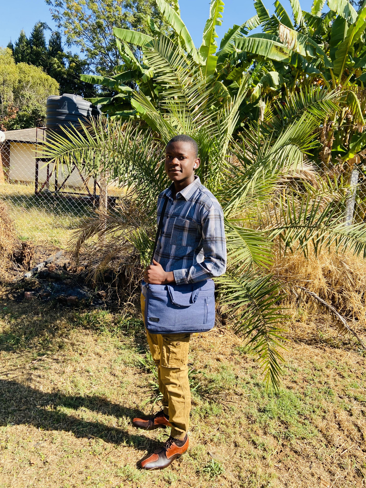

The following section is dedicated to my curriculum vitae (CV), which provides a comprehensive overview of my educational qualifications, work experience, skills, and achievements.

Langham 12 Mount Pleasant
Contact Details: 0786468992 / 0719951550
Email Address: josechigova@gmail.com
Date of Birth 16 August 2004
Gender Male
National Registration Number 86 – 2005660 Y 27
Citizenship Zimbabwean
Marital Status Single
Languages English and Shona
Religion Christian
Email josechigova@gmail.com
Ordinary Level (ZIMSEC)
St Francis Exevier's Kutama College
12 O’level Subjects [6As, 5Bs, 1C]
Advanced Level (ZIMSEC)
St Francis Xavier's Kutama College
3 A'level passes [14 points]
Leadership Organized, inspired and motivated teams to deliver results. Management Facilitated skills development of peers. Communication I utilize active-listening and feedback tools.
F. Mukoyi Kutama College Head Master Cell: +263774843116 Email: bmuzembe@gmail.com